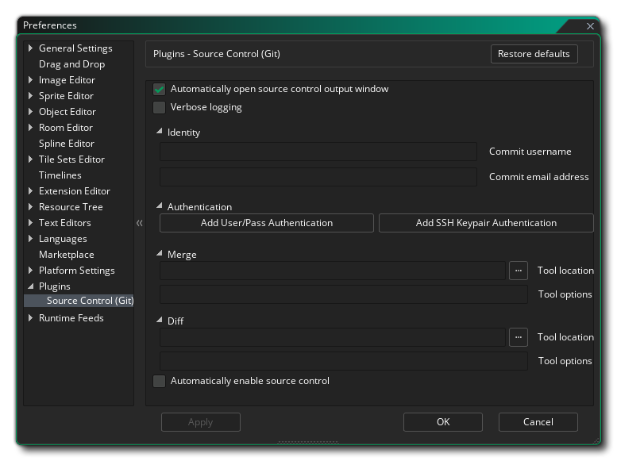

Die Plugins-Einstellungen werden verwendet, um alle zusätzlichen Plugins zu steuern, die der GameMaker Studio 2 IDE hinzugefügt wurden. Standardmäßig gibt es einen Abschnitt, der dem Source Control- Plugin für die Integration von GameMaker Studio 2 Projekten mit Git gewidmet ist.
In diesem Abschnitt werden die Einstellungen behandelt, die Sie festlegen müssen, damit das Git SCM- Plug-in mit GameMaker Studio 2 funktioniert. Zuerst haben Sie die allgemeinen Optionen:
Als nächstes folgt der Abschnitt Benutzeridentität mit den folgenden Feldern, die ausgefüllt werden müssen:
- Quellsteuerungs-Ausgabefenster automatisch öffnen: Wenn diese Option aktiviert ist, wird das Ausgabefenster der Quellcodeverwaltung automatisch angezeigt, wenn sich etwas ändert. Dies ist standardmäßig aktiviert.
- Ausführliche Protokollierung: Aktivieren Sie die ausführliche Protokollierung für das Git-Ausgabeprotokoll. Dies ist standardmäßig deaktiviert.
- Benutzername zum Committen als: Hier müssen Sie den Benutzernamen eingeben, mit dem Sie alle Commits für Git ausführen (dies muss mit dem Benutzernamen identisch sein, der beim Einrichten Ihres Git-Repositorys angegeben wurde).
- E-Mail zum Übernehmen als: Die E-Mail, die dieser Git-Identität zugeordnet ist.
Nachdem Sie die Benutzeridentität eingerichtet haben, können Sie eine neue Benutzername / Passwort-Kombination für die Authentifizierung hinzufügen, indem Sie auf die Schaltfläche Neue Benutzer / Pass-Authentifizierung hinzufügen klicken. Daraufhin öffnet sich das folgende Fenster mit verschiedenen Feldern zum Ausfüllen:
Sie können auch eine neue SSH-Schlüsselpaar-Authentifizierung hinzufügen, indem Sie auf die Schaltfläche mit dieser Bezeichnung klicken. Dies öffnet das folgende Fenster zum Ausfüllen:
Unter diesen Schaltflächen können Sie dann das Merge-Tool und das Diff-Tool für SCM mit diesen Optionen einrichten:
- Pfad zum Zusammenführen-Werkzeug: Hier geben Sie den vollständigen Dateipfad zum Git-Zusammenführungswerkzeug an.
- Optionen für das Merge-Tool: In diesem Feld können Sie zusätzliche Befehle hinzufügen, die bei jeder Verwendung des Merge-Tools ausgeführt werden.
- Pfad zum Diff-Tool: Hier geben Sie den vollständigen Dateipfad zum Git-Diff-Tool an.
- Optionen für das Diff-Tool: In diesem Feld können Sie zusätzliche Befehle hinzufügen, die bei jeder Verwendung des Diff-Tools ausgeführt werden.
Nachdem Sie diese eingerichtet haben, haben Sie noch eine letzte Option:
- Quellcodeverwaltung automatisch aktivieren: Wenn diese Option aktiviert ist, wird die Quellcodeverwaltung für alle neuen Projekte automatisch aktiviert. Dies ist standardmäßig deaktiviert.